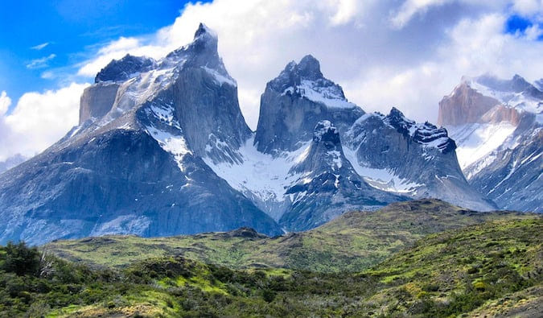

Hiking in Patagonia: A Beginner's Guide
Choosing Your Base
El Chaltén (Argentina) proved perfect for first-timers with its free camping and trailheads right from town. Across the border, Torres del Paine's W Trek offered more challenging but rewarding routes.
Essential Gear
The infamous Patagonian wind demands proper layers. My must-haves: windproof jacket, trekking poles, and waterproof boots. Refugios provide basic supplies, but packing light is key.
Trail Highlights
The Fitz Roy sunrise hike remains my most memorable. Starting at 4am, we reached Laguna de los Tres as dawn painted the peaks pink. Less crowded but equally stunning was the Loma del Pliegue Tumbado trail.
Patagonia Hiking Tips
- November-April is hiking season
- Book refugios/campsites 6+ months in advance
- Carry cash (limited ATMs)
- Learn basic Spanish trail terms